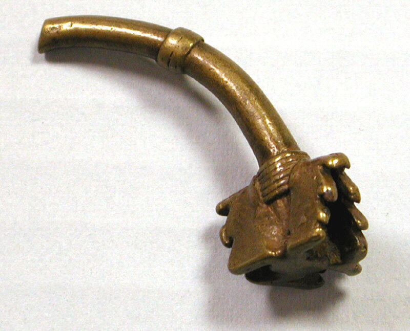
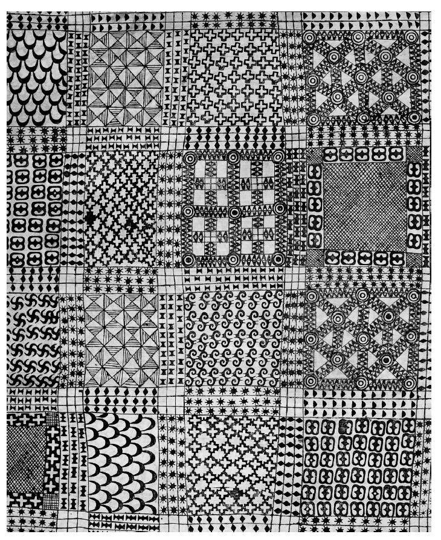
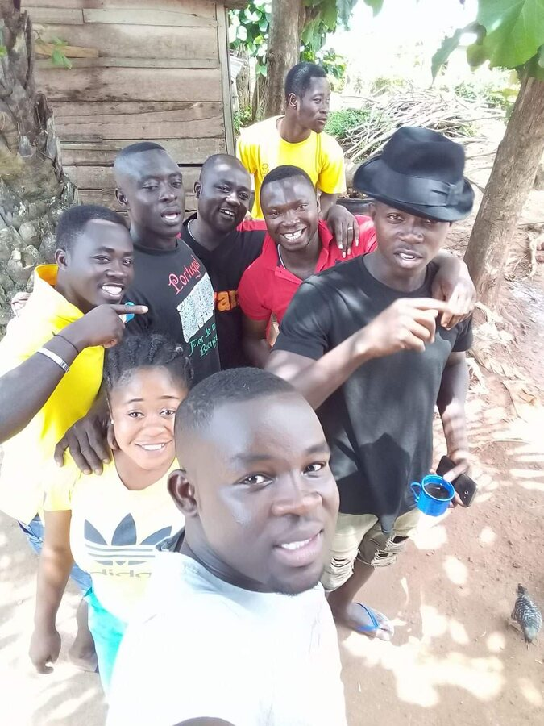

Culture is knowledge
Akan histories, oral traditions, symbols, design practices, values, and ways of communicating are studied with context and respect—not used as decoration.

Akan roots · Neurodivergent access · Individualized learning
At Aberewa, Akan-rooted learning is not an occasional celebration, and IEP support is not an afterthought. Mathematics and English Language Arts connect cultural knowledge, academic skills, communication, identity, and practical application. Each student receives access through the goals, accommodations, services, and specially designed instruction documented in the student’s IEP.
Akan histories, oral traditions, symbols, design practices, values, and ways of communicating are studied with context and respect—not used as decoration.
Neurodivergent students are treated as capable thinkers. Communication, sensory, reading, writing, attention, or processing differences do not reduce intellectual dignity.
Teachers implement each IEP and adjust materials, pacing, response formats, technology, grouping, and instruction according to documented student needs.
Students read, speak, calculate, model, design, listen, create, and reflect across subjects instead of experiencing knowledge as isolated fragments.
Documented people, objects, and designs
These images are not generic “African” decoration. Each one has a documented connection to Akan material culture or to a specific Bono-region community. Captions separate what the source establishes from the new academic lesson Aberewa builds around it.

Akan merchants and rulers used standardized brass weights to measure gold dust. In class, students investigate balance, equivalence, units, combinations, geometric form, and the role standard measurement plays in fair exchange.
Image: Metropolitan Museum of Art Open Access, CC0, via Wikimedia Commons. Historical context: The Met, Akan Gold Weights.
The documented cloth uses stamped motifs organized across a surface. Mathematics students can map repetition, frequency, symmetry, translation, rotation, grids, and proportion. English students can study how a named symbol, its cultural context, and a proverb or idea work together as visual rhetoric.
Image: public-domain photograph of an Adinkra mourning cloth collected in Kumasi in 1817, via Wikimedia Commons. Process information: British Museum.
The source identifies the people pictured as residents of Diasempa, a suburb of Techiman in Bono East—not as representatives of every Bono person. English lessons can use responsibly obtained oral history and place-based description. Mathematics can study locally sourced population, agriculture, distance, or market data without inventing “traditional” numbers.
Photo: Milanba 90, CC BY-SA 4.0, via Wikimedia Commons. Regional context: Ghana National Commission on Culture.Two subjects · One cultural foundation
Respectful use: Teachers identify sources, provide historical and cultural context, distinguish Akan traditions from other African cultures, and avoid presenting any symbol, story, or design as having one universal meaning.
Teacher-ready examples
Interdisciplinary bridges
Students identify patterns in number sequences, designs, repeated language, story structure, rhyme, and oral performance.
Students compare how a word, proverb, diagram, table, equation, and Adinkra symbol communicate meaning differently.
ELA claims require textual evidence; mathematical claims require examples, representations, calculations, or logical explanation.
Students practice communicating the same idea through plain language, visual models, symbols, performance, and formal academic forms.
IEP implementation
Neurodivergence includes varied ways of communicating, attending, sensing, processing, remembering, regulating, reading, writing, reasoning, and interacting. No single strategy fits every learner. The student’s IEP, current data, strengths, communication system, and family knowledge guide implementation.
Teachers model the skill, think aloud, provide examples and nonexamples, check understanding, and gradually release responsibility.
AAC, visual choices, wait time, gestures, speech, writing, and other communication forms are honored according to student needs.
Predictable routines, movement, breaks, reduced sensory load, flexible seating, and regulation tools are used when appropriate.
Directions, texts, and problems are divided into meaningful steps with additional processing time and planned repetition.
Students encounter ideas through concrete objects, visuals, sound, movement, language, diagrams, and symbols.
Text-to-speech, speech-to-text, audiobooks, calculators, digital organizers, adapted keyboards, and other approved tools increase access.
Vocabulary banks, sentence frames, worked examples, reference charts, graphic organizers, and guided notes support independence.
When the learning goal permits, students may respond through writing, speech, AAC, drawing, models, performance, or recording.
Teachers collect manageable evidence tied to IEP and curriculum goals, adjust instruction, and share understandable progress information.
Aberewa’s promise: Accommodations provide access; specially designed instruction teaches the learner how to progress; modifications are used only when documented and appropriate. Support should increase participation, communication, confidence, and independence without treating a student’s disability as a lack of intelligence.
Example integrated unit
In this teacher-adaptable unit, students investigate how patterns and concise forms communicate knowledge. Instruction can be shortened, extended, or individualized according to grade-level goals and IEP needs.
Study teacher-vetted Akan proverbs and contextualized geometric or textile patterns through audio, visuals, objects, and read-alouds.
Analyze figurative meaning in ELA and describe sequence, symmetry, ratio, transformation, or measurement in mathematics.
Develop an original pattern and a short statement or story expressing a documented community value or learning principle.
Present the rule, calculations, meaning, evidence, cultural context, and design choices through an accessible response format.
Research and image sources
For classroom use, teachers should add current Ghanaian and Bono-authored scholarship, local expertise, and validated Bono Twi resources whenever available.
Teachers document the academic target, cultural source and context, IEP connection, planned accommodations, communication options, assessment evidence, and next instructional step. Families and related-service professionals contribute when their knowledge is relevant to access and progress.
← Return to the complete curriculum